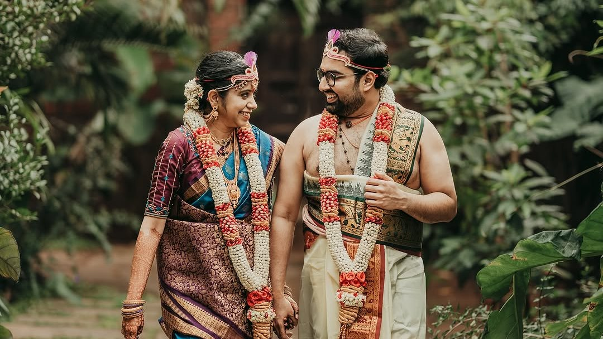
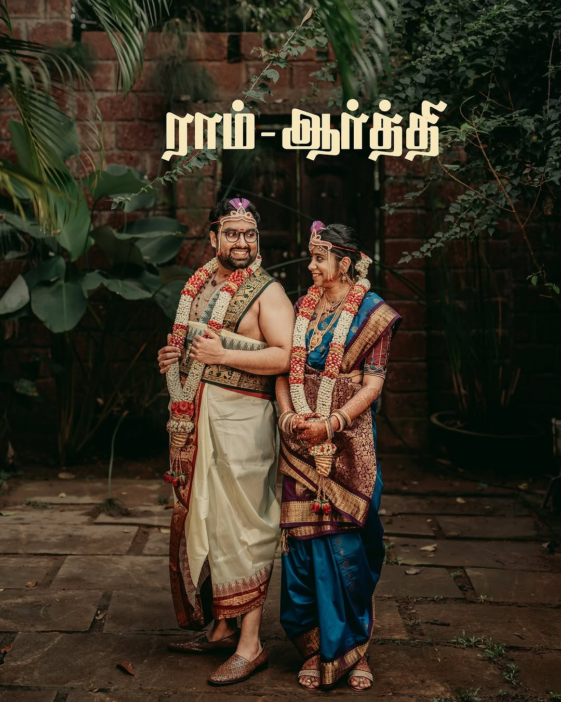

Wedding
Full-day and multi-day wedding coverage, photographed cinematically and honestly. Ceremonies, celebrations, details and portraits.
Weddings
About
A photography studio in Kollampalayam, Tamil Nadu, for weddings, newborns, maternity and childhood.

Our approach
We believe the best photographs are the ones that disappear into memory. Not the perfect pose, but the moment just before or after it, when people are simply being themselves.
So we work quietly. We watch more than we direct. We look for light first and arrange as little as possible. The result is a set of photographs that feel like the day, rather than a performance of it.
What we capture
Wedding work is shared as Memory Portraits By Nandhu. Newborn, maternity and childhood work is shared as Little Memory Portraits. Both come from the same studio, with the same care.
Full-day and multi-day wedding coverage, photographed cinematically and honestly. Ceremonies, celebrations, details and portraits.
WeddingsSoft, baby-led sessions in the first few weeks. Simple wraps, neutral tones and plenty of time for feeds and naps.
NewbornWarm, editorial portraits of the waiting, in the studio, outdoors or at home. Partners and siblings are always welcome.
MaternityToddler and kids sessions that follow your child rather than posing them. Movement, expression and family interaction.
Toddlers & Kids
Light first. Then people. Then, if there is time, everything else.
Our style
We edit for skin that looks like skin and colour that looks like the day. Nothing trendy that will date, nothing heavy-handed. Our photographs are made to be printed, framed and looked at for a very long time.

Work with us
Whether it is a wedding next year or a baby due next month, start with a message. We reply personally to every enquiry.